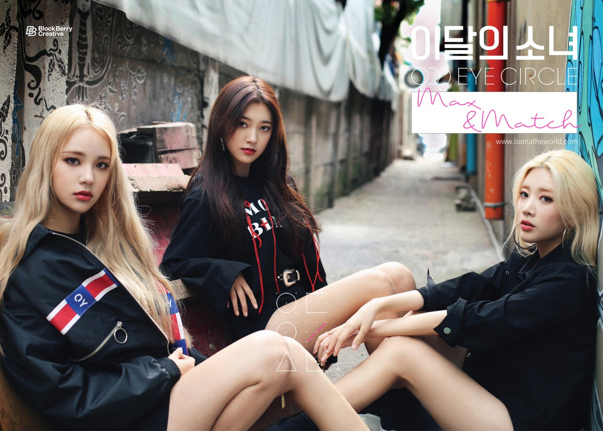

| Home | História | Loonaverso | Integrantes | Discografia |
Loona ou também conhecidas como "Garotas do mês" (em coreano 이달의 소녀 ou LOOΠΔ) é um grupo feminino sul-coreano totalmente único, formado pela BlockBerry Creative (empresa que as redige), uma subsidiária de uma das maiores empresas do ramo musical coreano, a Polaris Entertainment. O grupo é composto por 12 integrantes sendo elas: HeeJin, HyunJin, HaSeul, YeoJin, ViVi, Kim Lip, JinSoul , Choerry, Yves, Chuu, GoWon e Olivia Hye. Seu projeto de pré-estreia, iniciado em outubro de 2016, consistia em revelar novas integrantes a cada mês, até completar os doze meses, e formar três sub-unidades posteriormente, o LOOΠΔ 1/3, ODD EYE CIRCLE e YYXY. Cada vez que uma nova integrante era revelada ao público ela lançava uma música solo e uma música com alguma das outras membros que já haviam estreiado. Além disso, cada garota é representada por um mês, uma cor e um animal, tornando-as ainda mais únicas. A estreia oficial do Loona, quando todas se juntaram para formar um único grupo, aconteceu em 20 de agosto de 2018 com a faixa título "Hi High" e o mini álbum [++].
Antes de fazer a seleção das membros, o projeto Loona já existia, concebido pela primeira vez pelo ex diretor de outra grande agência, Jaden Jeong. Antes de ser apresentado oficialmente à BlockBerry Creative, subsidiária da Polaris Entertainment, Jaden já tinha o projeto "Garota do Mês" planejado, agora tudo o que precisava era de uma empresa que trouxesse seu projeto "para a realidade". Seu objeto com o Loona não era apenas ter um grupo completo, mas também uma identidade única e um fandom (fãs) que tivesse uma ligação direta com o grupo. Foi então que em 2014 foram feitos planos para criar uma agência composta por um "dream team" (time dos sonhos) na indústria, mais tarde essa agência se tornaria a BlockBerry Creative no início de 2016.
Para fazer a seleção das membros que iriam participar do Loona, as trainees (garotas que estavam sendo treinadas) precisavam se dividir em grupo com base no seu nível de habilidade. Quando chegava a hora de fazer a escolha de uma nova integrante, cada grupo mandava uma representante para se apresentar na frente dos diretores e assim disputar uma vaga. Essas representantes seriam julgadas através de uma avaliação em grupo, que incluía uma performance de canto e um teste de coreografia. Ademais, o caráter e a personalidade das trainees também foram um fator decisivo para a escolha das integrantes. Após cada disputa, as garotas seriam classificadas e a menina que pegasse o primeiro lugar se tornaria uma membro do grupo, enquanto a segunda e a terceira classificada poderiam escolher grupos diferentes para participar, o restante delas eram elimindas e não teriam a chance de esteriar nesse grupo.
Em 24 de agosto de 2018, durante uma entrevista com o CEO da Polaris Entertainment, foi revelado que todo o projeto de pré-estreia custou cerca de US$10.000.000. Devido ao interesse de grande organizações, o projeto recebeu grandes quantias de dinehiro através de patrocinadores da Coréia do Sul, do Japão e dos Estados Unidos.
A primeira garota é então revelada, no dia 25 de setembro de 2016, o primeiro teaser da que ficaria conhecida como a primeira garota, HeeJin, foi revelado ao público. HeeJin teve seu solo lançado no dia 04 de outubro de 2016, com uma música chamada "Vivid" e, foi a partir desse momento que o projeto Loona começou a tomar forma. Em 27 de outubro do mesmo ano, a segunda membro, HyunJin, foi revelada de maneira semelhante, sua estreia ofical ocorreu no dia 17 de novembro com um mini albúm que continha o seu o seu solo, "Around You" e um dueto feito com HeeJin chamado "I'll Be There". No dia 8 de dezembro, mais de um mês depois, a terceira integrante HaSeul continuou o padrão. Seu albúm solo foi lançado no dia 15 de dezembro, incluindo sua música "Let Me In" e uma música em trio, juntamente de HeeJin e HyunJin, com tema natalino chamada "The Carol". YeoJin foi revelada como a quarta integrante em 4 de janeiro de 2017, através de teasers, assim como as outras integrantes. Seu álbum solo foi lançado no dia 16 de janeiro, cintando com sua música tema "Kiss Latter", uma música em conjunto com HeeJin e HyunJin "My Sunday" e o dueto com HaSeul "My Melody", YeoJin foi a única integrante que teve mais de duas músicas incluídas em seu álbum. No dia 5 de fevereiro foi anunciado algo totalmente novo, a BlockBerry Creative divulgou que o Loona teria um novo projeto, a criação de três sub-unidades. A primeira delas seria chamada de Loona 1/3 composta por três membros já revelados (HeeJin, HyunJin e HaSeul) e uma membro secreta, mais YeoJin que não iria participar das músicas nem das promoções feitas pelas outras membros mas, ainda assim, é considerada como parte dessa sub-unidade. Logo eu irei falar um pouco mais sobre essa unidade. Em 11 de fevereiro Vivi foi revelada como a membro secreta que iria participar desse projeto e subsequente seria a quinta integrante do Loona. No dia 27 de fevereiro o primeiro teaser dessa sub-unidade foi lançado e dia 09 de março, a prévia para seu mini-álbum veio a público. Mas somente em 11 de março, o álbum foi lançado com o videoclipe para a música título " Love & Live". E finalmente no dai 4 de abril ViVi foi anunciada como a quinta integrante do Loona, seu álbum foi lançado no dia 17 de abril, com a faixa-título "Everyday I Love You[feat. HaSeul] e uma música chamada "Everyday I Need You" que seria uma colaboração com uma das integrantes que ainda seria anunciada, vulgo JinSoul. Logo após ViVi ter laçar sua música de estreia a empresa anunciou que o Loona 1/3 iria publicar, no dia 26 de abril, uma nova música, intitulada "Sonatine". Quando essa música finalmente foi ao ar, muitos fãs notaram que na descrição do videoclipe continha algo novo, o enredo do Loona, o LOOΠΔVERSO, havia finalmente sido introduzido, mais para frente eu irei explicar detalhadamente sobre ele. Além disso, a descrição também revelou que as próximas três integrantes iriam fazer parte da segunda sub-unidade do Loona.
Como dito anteriormente, o Loona 1/3 é a primeira sub-unidade do Loona, elas estreiaram oficialmente com as integrantes HeeJin, HyunJin, HaSeul e ViVi no dia 11 de março de 2017 com a música "Love & Live". Posteriormente, lançaram sua segunda música com um videoclipe, "Sonatine" no dia 27 de abril do mesmo ano. Cada sub-unidade tem algo de diferente que as diferencia, no caso dessa unidade é que cada garota representa uma localização diferente.
O significado para o nome do grupo acontece quando seus números são invertidos para criar "3/1", o número 3 é usado para representar HeeJin, HyunJin e HaSeul (as três primeiras membros introduzidas), a "/" representa YeoJin (que foi revelada depois de HaSeul, fazendo com que ela seja uma pausa entre a revelação das membros do Loona 1/3), e por fim, o 1 seria representado por ViVi (única membro a ser introduzida depois do lançamento da sub-unidade).
Loona 1/3 é uma combinação de garotas que vivem no Planeta Terra. Essas garotas retratam os cenários mais realistas e cotidianos que podem ser facilmente encontrados nas ruas ou nas escolas, como, por exemplo, o primeiro amor. HeeJin, HyunJin, HaSeul e ViVi começaram suas histórias, respectivamentena na França, Japão, Isândia e Hong Kong para se encontarem e unificarem como uma só, ou seja, como uma unidade, o Loona 1/3.
No dia 14 de maio, a sexta membro foi anunciada, Kim Lip. Seu álbum foi lançado dia 22 de maio com as músicas "Eclipse" e "Twillight". Kim Lip não teve uma colaboração com as outras membros em seu álbun de estreia. A próxima integrante a ser revelada seria JinSoul, no dia 12 de junho, seu lançamento oficial ocorreu com a faixa título "Singing in the Rain" e um dueto com Kim Lip, "Love Letter", ambos lançados no dia 25 de junho. E finalmente a membro que faltava para formar a segunda sub-unidade foi revelada, no dia 12 de julho Choerry foi anunciada como a oitava integrante. Lançou, no dia 27 de julho, seu solo intitulado "Love Cherry Motion" e um dueto junto com JinSoul chamado "Puzzle". Agora sim, com todas as membros anunciadas, no dia 29 de agosto a BlockBerry Creative divulgou um teaser para a sua segunda sub-unidade, o ODD EYE CIRCLE, composto por essas três integrantes recém citadas. O primeiro mini-álbum, Mix & Match, foi oficialmente lançado dia 20 de setembro, juntamente com o videoclipe da faixa-principal, "Girl Front". Futuramente elas estariam publicando sua segunda faixa-título denominada "Sweet Crazy Love", junto com mini-álbum "Max & Match".
A segunda sub-unidade do Loona, formada pelas integrantes: Kim Lip, JinSoul e Choerry. Estreiaram oficialmente no dia 20 de setembro de 2017 com a música "Girl Front" e no mês seguinte laçaram sua última música como uma unidade, "Sweet Crazy Love", dai 30 de outubro. Cada garota do ODD EYE CIRCLE "possuí" um superpoder dentro do LOONAVERSO e uma representação lunar.
Diferentemente do Loona 1/3, que traz um conceito mais realista e inocente, falando sobre o primeiro amor, o ODD EYE CIRCLE apresenta algo mais maduro, um estilo Girl Crush, elas retratam uma garota apaixonada em torno do tema amor e atração. Além disso, as três garotas falam sobre como não deve-se esperar que o amor aconteça naturalmente, mas deve tomar a iniciativa e fazer ele acontecer sozinho.
Agora faltavam apenas mais quatro garotas serem reveladas ao público antes de todas se juntarem, tonarnando-se um único grupo, o Loona. Foi então que, no dia 14 de novembro Yves, a nona membro, foi anunciada. Ela lançou seu dia 28 de novembro, com a música título chamada "New" e mais uma canção intitulada "D-1", assim como HeeJin e Kim Lip, Yves também não possuí uma música em colaboração com as outras integrantes em seu álbum. No dia 14 de dezembro, Chuu foi revelada como a décima membro e, em 28 de dezembro, seu álbum foi lançado, incluindo o seu solo "Heart Attack" e o dueto com Yves "Girls Talk". Em 14 de janeiro de 2018, a penúltima integrante veio a público, GoWon foi revelada com a décima primeira membro. Lançou sua faixa-título, "One & Only" e uma música acompanhada de Chuu e Kim Lip chamada "See Saw" no dia 30 de janeiro. E finalmente o momemto que todos mais esperavam, a última integrante foi finalmente revelada sob o nome artístico Olivia Hye no dia 16 de março. Seu álbum solo foi lançado em 30 de março, acompanhado por sua faixa-principal "Egoist", que teve a participação de JinSoul, mais uma outra música que recebeu o nome de "Rosy", onde Olivia Hye canta juntamente de GoWon e HeeJin. Sem tempo para descansos, no dia 26 de abril a BlockBerry Creative anunciou sua última sub-unidade, O YYXY (sigla para "Youth Youth By Young) que seria composta pelas qautro últimas integrantes anunciadas, Yves, Chuu, GoWon e Olivia Hye. Ao contrário das outras duas sub-unidadades, o YYXY lançou apenas um álbum intitulado Beauty & the Beat que contou com a participação de Grimes (uma musicista canadense) para a faixa-principal, "Love4eva" que foram lançados dia 30 de maio. O grupo apresentou a faixa-principal ao vivo pela preimeira vez no evento Premier Greeting-Line & Up, que também anunciou oficialmente a formação completa do Loona para os fãs.
São a terceira e última sub-unidade do girl group Loona, composta por Yves, Chuu, GoWon e Olivia Hye estreiaram no dia 30 de maio de 2018 com o mini álbum Beuty & the Beat e a música tema "Love4eva", composta com a ajuda de Grimes.
Seu conceito é um pouco diferentes dos de mais, elas falam sobre o ego, a juventude a liberdade e o amor próprio (não um relacionamento interpessoal como as outras sub-unidades). Mesmo estando apaixonadas, magoadas e feridas elas continuam seguindo em frente, capturando esses pequenos momentos da juventude para complementar o seu ego. Elas expressam que o ego representa apaixonar-se por si mesma, que elas devem primeiro amar a si mesmas antes de amar os outros. Nessa sub-unidade cada garota é representada por uma fruta e uma emoção.
Depois de longos dois anos de espera, as integrantes iriam finalmente se juntar e tornar-se um único grupo chamado Loona. No dia 30 de julho de 2018, foi anunciado que, antes da estréia da faixa-título eles iriam lançar uma música de pré-lançamento do álbum para aumentar as expectativas da estréia. Foi então que "favOriTe", lançada oficialmente no dia 07 de agosto juntamente com um videoclipe. No dia seguinte, começaram a ser divulgados os teasers individuais de cada integrante para a estréia oficial do álbum [++]. E foi somente em 20 de agosto que a faixa-título "High Hi" e o álbum vieram a público e, devo dizer, não decepcionaram, logo que ouviram a música muitas pessoas caíram nos encantos de quem prometeria ser um dos maiores grupos de k-pop da atualidade.